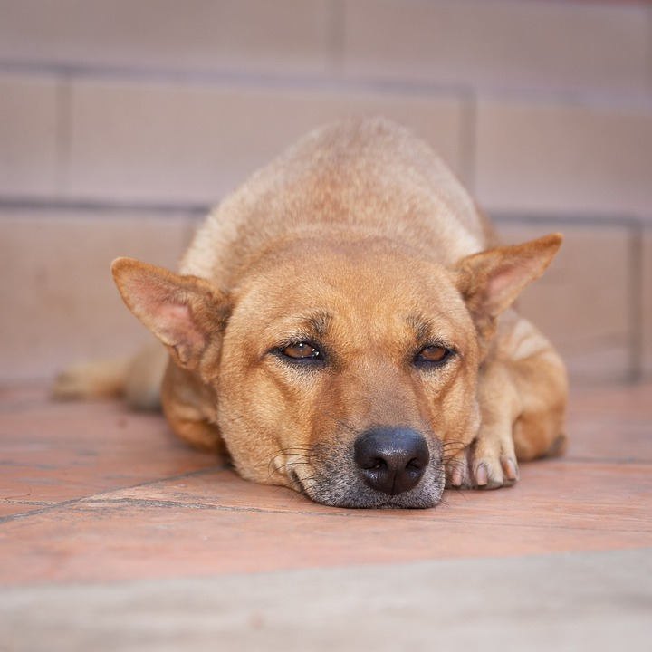
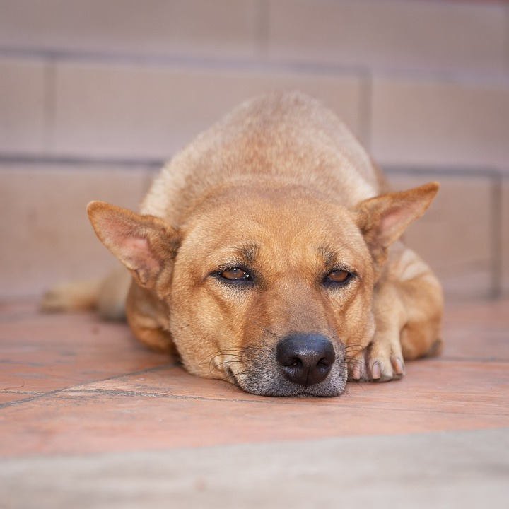

DOG:MAN'S BEST FRIEND
Everything I know I learned from dogs.
Dogs do speak, but only to those who know how to listen.
Dogs’ lives are too short. Their only fault, really.
Dogs are not our whole life, but they make our lives whole.
Some of my best leading men have been dogs and horses.
The better I get to know men, the more I find myself loving dogs.
Dogs never bite me. Just Humans
Anybody who doesn’t know what soap tastes like never washed a dog.
A dog is the only thing on earth that loves you more than he loves himself.
Such short little lives our pets have to spend with us, and they spend most of it waiting for us to come home each day.
If there are no dogs in Heaven, then when I die I want to go where they went.
There is no faith which has never yet been broken, except that of a truly faithful dog